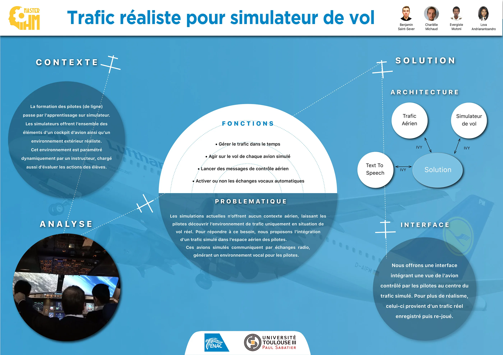
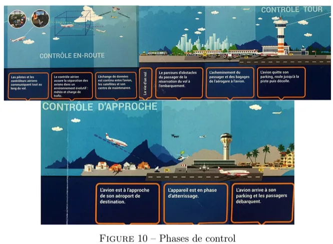
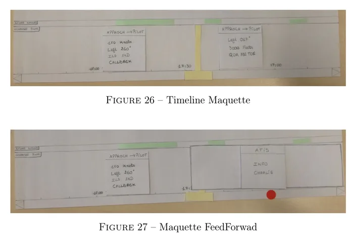
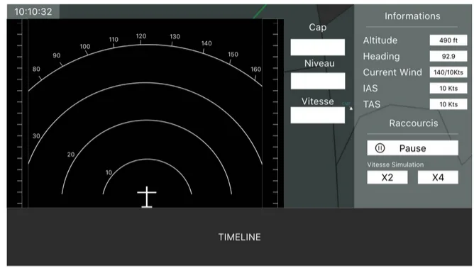
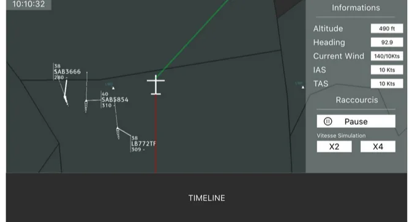

Poste de supervision pour simulateur de vol
Donner aux instructeurs un contexte aérien réaliste, pensé pour des non-experts.
Conception d'un poste de supervision pour instructeurs de pilotage (ENAC). Arbitrage principal : une timeline horizontale compacte pour suivre les événements ATC sans voler d'espace à la vue radar. Second arbitrage : réutiliser le Navigation Display connu des instructeurs plutôt qu'inventer un mode d'interaction.

POSTER DE SYNTHÈSELe poster du chef d'œuvre, synthèse du projet présenté à l'ENAC.
Les simulateurs de pilotage n'offraient aucun contexte aérien : les communications avec le contrôle et les échanges entre le contrôle et les autres avions du secteur étaient absents. Les pilotes ne les découvraient qu'en vol réel. L'enjeu était d'ajouter ce contexte (des messages ATC réalistes et un environnement vocal) tout en gardant l'outil utilisable par un instructeur qui mène déjà la séance, et sans supposer qu'il maîtrise la phraséologie aéronautique.
Une démarche centrée utilisateur en deux itérations, ancrée dans le terrain et l'état de l'art.
- Observé deux séances réelles avec un instructeur de la DFPV, d'une situation simple à une simulation chargée de fin de cycle.
- Analysé l'état de l'art, dont l'IIPP (Interface Innovante de Pseudo-Pilotage) conçue par la recherche de l'ENAC. Nous l'avons étudiée pour situer ce qui manquait, sans la reprendre : notre utilisateur et notre besoin étaient différents.
- Formalisé les besoins à partir d'un scénario réel de remise de gaz, puis prototypé en basse fidélité plusieurs représentations, confrontées aux clients, avant d'aboutir aux maquettes haute-fidélité.

Phases du contrôle
Étude amont des phases du contrôle aérien.

Prototypes papier
Timeline circulaire vs. horizontale, confrontées aux clients.

Vue Navigation Display
Manipulation directe des avions via le ND connu des instructeurs.

Vue carte centrée avion
Vue d'ensemble du trafic avec la timeline en bas.
Suivre les événements sans voler l'espace à la vue radar
Le cœur de l'interface : comment l'instructeur visualise et déclenche les événements de l'exercice tout en gardant l'œil sur le trafic ? Nous avons prototypé plusieurs représentations temporelles. La timeline circulaire, inspirée de l'horloge, était élégante mais prenait trop de place au détriment de la vue radar. Une piste combinant timeline horizontale et verticale simultanément a été écartée pour sa charge cognitive.
J'ai retenu une timeline horizontale en bas de l'écran, compacte, où chaque bloc résume un message par le nom de l'interlocuteur, avec un code couleur distinguant la fréquence courante des autres. Un clic déclenche le message audio via la synthèse vocale. La règle qui a guidé ces choix : préserver la vue radar et limiter la charge cognitive.
Réutiliser un repère connu
Pour manipuler les avions du trafic, plutôt que d'inventer un mode d'interaction, nous avons intégré un Navigation Display (ND), l'écran que les instructeurs connaissent déjà du cockpit. Le faible coût d'apprentissage et l'efficacité de la manipulation directe primaient sur l'originalité. On part de ce que l'utilisateur sait déjà.
Le chef d'œuvre a abouti à un prototype démontrable du poste de supervision, et surtout à la spécification des besoins et des éléments clés pour rendre une simulation plus réaliste. Il était conçu comme le prélude d'un travail de recherche à l'ENAC. Pour moi, c'est le projet fondateur en design d'interaction : comprendre un métier exigeant avant de dessiner, observer l'usage réel, arbitrer entre densité et charge cognitive sur une interface critique.